화면 설계 — 준비 가이드
능력단위 화면 설계 (2001020224_23v6) / 5수준 · 평가방법 포트폴리오 (100점) · 합격선 60점 · 교육 2026-02-24 ~ 03-05 · 평가 03-05
산출물마다 이게 무엇인지 → 어떻게 만들어 나가는지 → 같이 해보기 순서로 되어 있습니다. 읽고 따라 하면 그대로 제출물이 됩니다. 실제 작성은 포트폴리오 제출서 에서 하고, 막히면 그 페이지의 [예시 보기] 를 누르면 완성 예시가 펼쳐집니다.
「같이 해보기」의 예시는 가상의 쇼핑몰 데일리마켓입니다. 본인 팀 주제로 같은 자리에 다른 내용을 넣으면 됩니다.
0. 무엇을 내는가
| 과제 | 만들어야 할 것 | 형식 | 배점 | 난이도 |
|---|---|---|---|---|
| 1 | 유스케이스 다이어그램 + 유스케이스 명세서 | 슬라이드 또는 문서 | 30 | 중 |
| 2 | 스타일가이드 (구동환경 · 로고 · 폰트 · 색상 · 레이아웃 · 구성요소) | 슬라이드 또는 문서 | 30 | 하 |
| 3 | 프로토타입 (화면 이동 · 효과 정리) | Figma + 화면 캡처 | 40 | 상 |
포털 제출 칸은 파일 1개 + 링크 1개 뿐입니다. 세 가지를 한 파일로 합쳐 내고 Figma 링크를 따로 냅니다.
1. 전체를 관통하는 개념 하나
화면 설계는 결국 사용자가 머릿속에 그린 모형과 개발자가 만든 모형의 어긋남을 줄이는 일입니다. 이 어긋남을 두 가지로 나눠 부릅니다. 이 구분이 이 과목 전체의 뼈대이고, 산출물마다 판단 기준이 됩니다.
- 실행 차 — 하려는 일과 시스템이 할 수 있는 일이 다르다
- 사용자는 「주문을 취소하고 싶다」인데 화면에는 그 길이 없거나 숨어 있는 상태입니다. 이걸 줄이는 원리가 셋입니다.
- 사용 의도 파악 — 관심 있는 항목을 눈에 띄는 자리에, 필요한 시점에 내놓습니다
- 행위 순서 규정 — 순서를 잘게 나눠 명확히 제시하고, 한 작업의 단계 수를 줄입니다. 익숙한 순서를 씁니다
- 순서대로 실행 — 흐름이 화면만 봐도 보이게 하고, 피드백과 취소를 주며, 기본값으로 조작을 줄입니다
- 평가 차 — 나온 결과와 하려던 일이 다르다
- 눌렀는데 아무 변화가 없어 제대로 눌렀는지 모르는 상태입니다. 이것도 셋입니다.
- 결과를 빨리 지각하게 — 누른 즉시 무언가 바뀌어 보여야 합니다
- 바뀐 상태를 쉽게 알게 — 상태 정보를 단순하고 이해하기 쉽게 보여 줍니다
- 의도와 결과가 같은지 알게 — 미리보기처럼 예상 결과를 먼저 보여 줍니다
뒤에서 「이 버튼을 왜 여기 뒀는가」를 설명해야 할 때 이 여섯 개 중 하나를 근거로 대면 됩니다. 학습모듈 LM2001020224 「화면 설계」 기준입니다.
2. 실습
산출물 그 단계에서 손에 남는 것 · 채점 그 단계로 충족되는 채점 항목 번호
1완성본을 먼저 봅니다
포트폴리오 제출서 를 열고 [예시 보기] 를 누릅니다. 끝까지 훑어봅니다. 지금 이해하지 못해도 됩니다. 8일 뒤에 무엇을 내야 하는지만 눈에 넣습니다.
각 과제 끝의 회색 상자가 「왜 그렇게 썼는지」 해설입니다. 예시를 볼 때만 나옵니다.
2Figma 를 열어 둡니다
과제 3에서 씁니다. 계정을 만들고 빈 파일에 Frame 하나, 사각형과 글자를 얹어 봅니다. 오른쪽 Prototype 탭이 있다는 것만 확인합니다.
도구를 익히는 시간과 설계하는 시간을 섞지 않습니다. 섞으면 둘 다 안 됩니다.
3주제를 정합니다
목록 · 상세 · 입력 폼 · 표 · 외부 연동 · 로그인 제약이 한 서비스에 다 들어 있으면서 누구나 아는 흐름이어야 합니다. 예약 서비스 · 도서관 · 배달 앱 모두 됩니다.
주제 한 문장4요구사항 정의
요구사항이 무엇인가
「이 서비스가 무엇을 해야 하는가」를 문장으로 고정한 것입니다. 화면을 그리기 전에 합니다. 순서를 바꾸면 그림을 그려 놓고 뒤늦게 기능을 끼워 넣게 되어 화면이 계속 바뀝니다.
학습모듈은 요구사항을 네 가지로 나눠 뽑으라고 합니다. 이 넷을 각각 훑어야 빠지지 않습니다.
| 종류 | 무엇인가 | 데일리마켓이라면 |
|---|---|---|
| 데이터 요구 | 다루는 대상과 그 속성. 인터페이스에 영향을 주므로 가장 먼저 확인합니다 | 상품 = 상품명 · 가격 · 재고 · 원산지 · 이미지 주문 = 주문번호 · 상품목록 · 금액 · 배송상태 |
| 기능 요구 | 목적을 이루려면 무엇을 실행해야 하는가. 동사형으로 씁니다. 최대한 철저히 | 상품을 검색한다 · 장바구니에 담는다 · 수량을 바꾼다 · 주문한다 · 결제한다 · 주문을 취소한다 |
| 품질 | 기능 말고 중요한 속성. 정량화 가능하게 | 목록은 2초 안에 뜬다 · 모바일에서도 쓸 수 있다 |
| 제약사항 | 마감 · 비용 · 규제. 바꿀 수 있는지 없는지를 미리 확인합니다 | 결제는 외부 PG 를 쓴다(변경 불가) · 장바구니부터는 로그인해야 한다(변경 불가) |
어떻게 정의해 나가는가
- 목표를 정합니다. 원래는 사용자 인터뷰로 뽑습니다. 팀 안에서 「누가 무엇 때문에 이걸 쓰는가」를 한 문장으로 정하면 됩니다. 인터뷰를 한다면 한 명씩, 한 시간을 넘기지 않습니다.
- 네 가지 요소로 나눠 뽑습니다. 위 표의 순서대로 데이터 → 기능 → 품질 → 제약을 각각 훑습니다. 한꺼번에 떠올리려 하면 기능만 잔뜩 나오고 데이터와 제약이 빠집니다.
- 정황 시나리오를 씁니다. 요구사항 정의의 가장 기초가 되는 시나리오입니다. 모든 것이 잘 풀리는 상황을 가정하고, 사용자 입장에서 육하원칙에 따라 간결하게 씁니다. 같이 움직이는 기능은 한 시나리오로 묶습니다.
- 명세서 표로 옮깁니다. 시나리오에 나온 동사를 한 줄씩 떼어 번호를 붙입니다.
- 검토를 받습니다. 팀 밖의 사람이나 강사에게 한 번 보여 줍니다.
여기서 밑줄 칠 동사 — 목록을 본다 · 상세를 연다 · 옵션과 수량을 고른다 · 담는다 · 합계를 확인한다 · 주문한다 · 결제한다 · 내역을 확인한다. 이게 그대로 다음 표가 됩니다.
| 번호 | 요구사항명 | 내용 | 우선순위 |
|---|---|---|---|
| SR-01 | 회원가입 | 비회원은 아이디·비밀번호·이메일로 가입한다 | 높음 |
| SR-02 | 로그인 | 회원은 아이디와 비밀번호로 로그인한다 | 높음 |
| SR-03 | 상품 목록 | 카테고리별로 상품을 목록으로 보여 준다 | 높음 |
| SR-04 | 상품 검색 | 상품명으로 검색한다 | 중간 |
| SR-05 | 상품 상세 | 상품명·가격·원산지·재고를 보여 주고 중량과 수량을 고르게 한다 | 높음 |
| SR-06 | 장바구니 | 담은 상품의 수량을 바꾸거나 지운다. 합계 금액은 자동으로 다시 계산한다 | 높음 |
| SR-07 | 주문·결제 | 배송지를 받아 결제를 요청한다. 재고가 부족하면 진행하지 않는다 | 높음 |
| SR-08 | 주문 내역 | 주문 목록과 배송 상태를 보여 준다. 배송 전이면 취소할 수 있다 | 중간 |
우선순위는 「없으면 서비스가 성립하지 않는가」 로 판단합니다. 검색과 주문 내역은 없어도 물건은 팔리므로 중간입니다.
이렇게 쓰면 안 됩니다
「기능」으로 끝내면 무엇을 만들지 정해지지 않습니다. 화면이 해야 할 일을 동사로 씁니다.
품질 요구는 재 볼 수 있어야 요구사항입니다.
하지 말아야 할 것도 요구사항입니다. SR-07 의 「재고가 부족하면 진행하지 않는다」가 그것입니다. 이렇게 적어 두면 뒤에서 예외 흐름을 빠뜨리지 않습니다. 여기가 나중에 5점입니다.
요구사항 명세서 6행 이상5기능 정의 매트릭스
이게 무엇인가
요구사항을 누가 쓰는지 기준으로 다시 늘어놓은 격자입니다. 명세서는 기능을 세로로 나열하지만, 실제 화면은 사람마다 다르게 보여야 합니다. 비회원에게 보이는 것과 관리자에게 보이는 것이 다릅니다. 그 차이를 표로 드러냅니다.
어떻게 만드나
- 액터를 가로줄에 놓습니다. 비회원 · 회원 · 관리자
- 서비스를 세로줄에 놓습니다. 인증 · 상품 · 장바구니와 주문 · 결제
- 칸마다 CRUD 를 붙여 채웁니다. C 등록 · R 조회 · U 수정 · D 삭제, 그 밖의 처리는 P 를 붙입니다. 로그인 · 결제 · 주문 같은 동작입니다
- 빈칸을 확인합니다. 비어 있는 칸이 곧 제약입니다
| 서비스 | 비회원 | 회원 | 관리자 |
|---|---|---|---|
| 장바구니 · 주문 | — | (C) 상품을 장바구니에 담는다 (R) 장바구니를 조회한다 (U) 수량을 바꾼다 (D) 항목을 지운다 (P) 주문한다 (D) 배송 전 주문을 취소한다 |
(R) 전체 주문을 조회한다 (U) 배송 상태를 바꾼다 |
비회원 칸이 비었습니다. 이 빈칸이 곧
「장바구니부터는 로그인해야 쓸 수 있다」는 제약입니다. 이 제약은 뒤에서
유스케이스의 «include» 가 되고, 화면 흐름도의 점선이 됩니다.
칸을 채우다 보면 「관리자는 상품을 수정할 수 있나?」 같은 질문이 저절로 나옵니다. 명세서만 쓰면 이런 게 빠집니다.
기능 정의 매트릭스6유스케이스 다이어그램
이게 무엇인가
누가(액터) 이 시스템으로 무엇을 하는가(유스케이스) 를 한 장에 그린 그림입니다. 안을 어떻게 만드는지는 그리지 않습니다. 밖에서 본 시스템입니다.
세 가지 일을 합니다.
- 빠진 요구사항을 찾습니다. 앞에서 적은 SR 번호가 모두 타원으로 나타나는지 눈으로 셉니다
- 만들 범위를 굳힙니다. 경계 안에 있으면 우리가 만들고, 밖에 있으면 남이 만듭니다
- 다음 문서의 목차가 됩니다. 타원 하나가 명세서 한 건이고, 화면 목록 한 줄입니다
쓰는 기호
요소 다섯 가지와 관계선 네 가지가 전부입니다. 이 아홉 개만 알면 그릴 수 있습니다.
| 기호 | 이름 | 뜻 | 표기 규칙 |
|---|---|---|---|
| 다이어그램 프레임 |
이 그림이 유스케이스 다이어그램이라는 표시입니다. 그림 전체를 감쌉니다 | 왼쪽 위 오각형 안에 uc 와 다이어그램 이름을 적습니다 | |
| 시스템 경계 | 만들 시스템의 범위입니다. 안은 우리가 만들고 밖은 만들지 않습니다 | 사각형 왼쪽 위에 시스템 이름. 프레임과 다른 것입니다 | |
| 액터 (사람) | 시스템을 쓰는 역할입니다. 「김철수」가 아니라 「회원」입니다 | 경계 밖에 둡니다. 아래에 역할 이름을 적습니다 | |
| 액터 (외부 시스템) |
사람이 아닌 액터입니다. 결제 대행사처럼 밖에서 불려 오는 시스템 | 사각형에 «system» 을 붙입니다 | |
| 유스케이스 | 액터가 시스템으로 이루려는 목표 하나입니다. 화면 이름이 아닙니다 | 경계 안에 둡니다. 이름은 동사로 끝냅니다 | |
| 연관 | 액터가 그 일을 직접 시작합니다 | 실선. 화살촉을 달지 않습니다 | |
| include | 항상 거치는 절차입니다. 빼면 원래 것이 성립하지 않습니다 | 점선 + 속 빈 화살촉. 기반 → 포함 방향. 선 옆에 «include» | |
| extend | 조건이 맞을 때만 나타납니다. 없어도 원래 것은 성립합니다 | 점선 + 속 빈 화살촉. 확장 → 기반 방향으로 include 와 반대입니다. «extend» 와 조건을 [ ] 로 | |
| 일반화 | 한 액터가 다른 액터의 일을 전부 하면서 더 합니다 | 실선 + 속 빈 삼각형. 자식 → 부모. 삼각형이 부모 쪽에 붙습니다 |
프레임과 시스템 경계를 같은 것으로 아는 경우가 많습니다. 프레임은 그림을 감싸는 것이고 경계는 시스템의 범위입니다. 액터는 경계 밖에 있지만 프레임 안에 있습니다.
무엇이 액터이고 무엇이 유스케이스인가
여기서 대부분 막힙니다. 판단 기준을 정해 두고 봅니다.
액터는 시스템 밖에서 시스템을 쓰는 쪽입니다. 세 가지를 물어봅니다.
- 시스템 밖에 있는가 — 안에 있으면 액터가 아니라 그냥 기능입니다
- 시스템에 무언가를 시키거나 시스템이 무언가를 요청하는 상대인가
- 역할인가 — 「김철수」가 아니라 「회원」입니다. 한 사람이 두 역할을 할 수도 있습니다
유스케이스는 액터가 시스템으로 이루려는 목표 하나입니다. 화면 이름이 아닙니다.
화면 이름을 쓰면 화면을 바꿀 때마다 다이어그램을 고쳐야 합니다. 「DB 저장」처럼 시스템 내부 동작을 쓰면 액터의 목표가 아니라 구현입니다. 동사로 끝나면 대체로 맞습니다.
앞 단계가 그대로 재료입니다. 매트릭스의 액터 열이 액터이고 칸의 문장이 유스케이스입니다. 새로 지어내지 않습니다.
관계선을 언제 쓰는가 — 하나씩
관계선은 상황을 보고 고릅니다. 네 가지 상황을 차례로 봅니다.
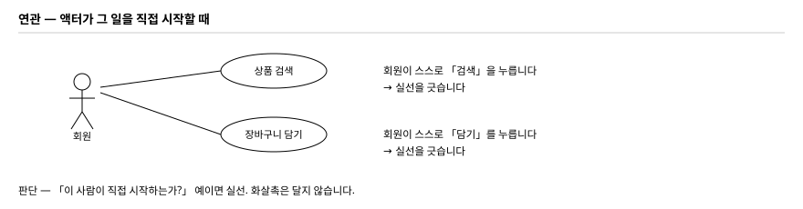
판단은 두 가지입니다. 「예외 없이 매번 거치는가」 그리고 「빼내면 원래 것이 성립하지 않는가」. 둘 다 예여야 include 입니다.
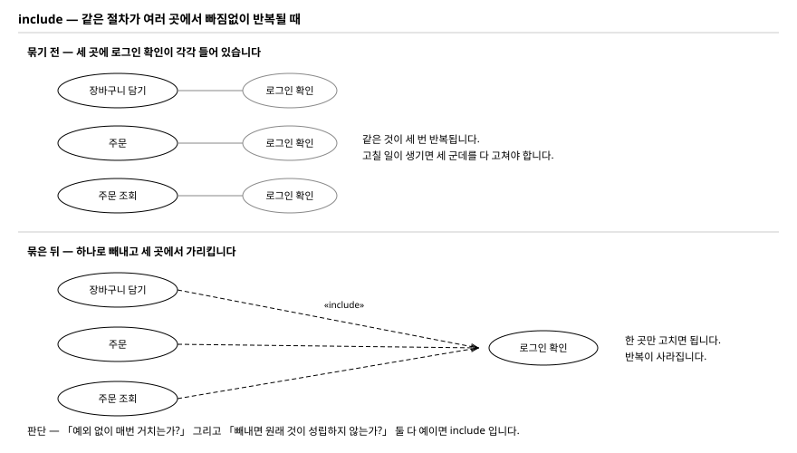
화살표가 확장하는 쪽에서 기반 쪽으로 들어옵니다. include 와 반대입니다. 조건을 대괄호로 반드시 적습니다. 조건이 없으면 extend 를 쓸 이유가 없습니다.
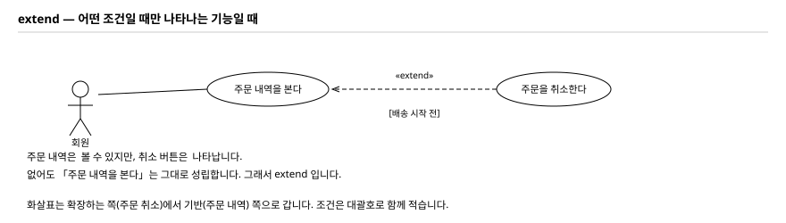
삼각형은 부모 쪽에 붙입니다. 거꾸로 그리면 뜻이 반대가 됩니다.
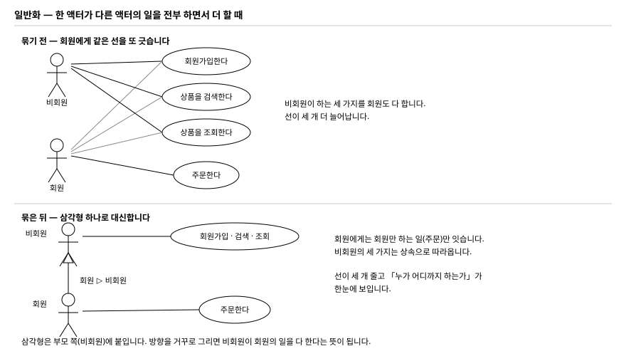
2. 아니면, 같은 절차가 여러 곳에서 매번 반복되는가 → include
3. 아니면, 조건이 맞을 때만 나타나는가 → extend
4. 액터끼리 「전부 하면서 더 한다」 관계인가 → 일반화
그리는 순서 — 8단계
아래 순서대로 그립니다. 각 그림에서 검게 그려진 것이 그 단계에서 새로 추가한 것이고, 회색은 앞 단계에서 이미 그린 것입니다.
uc 와 다이어그램 이름을 적습니다.
uc 는 use case diagram 의 약자로, 이 그림이 어떤 종류인지 알려 줍니다.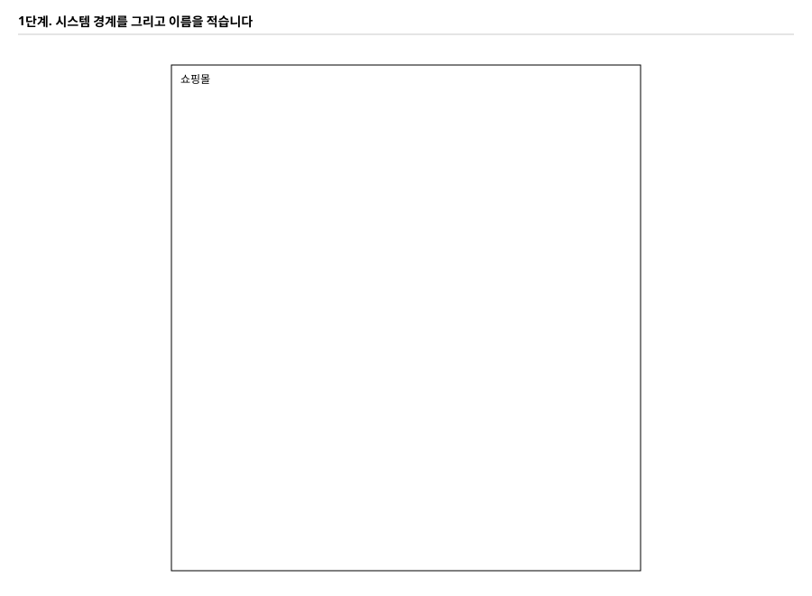

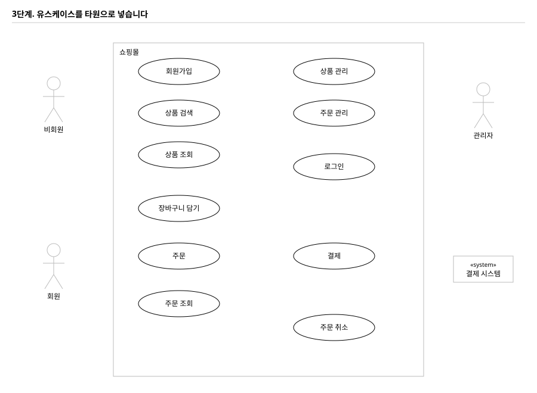
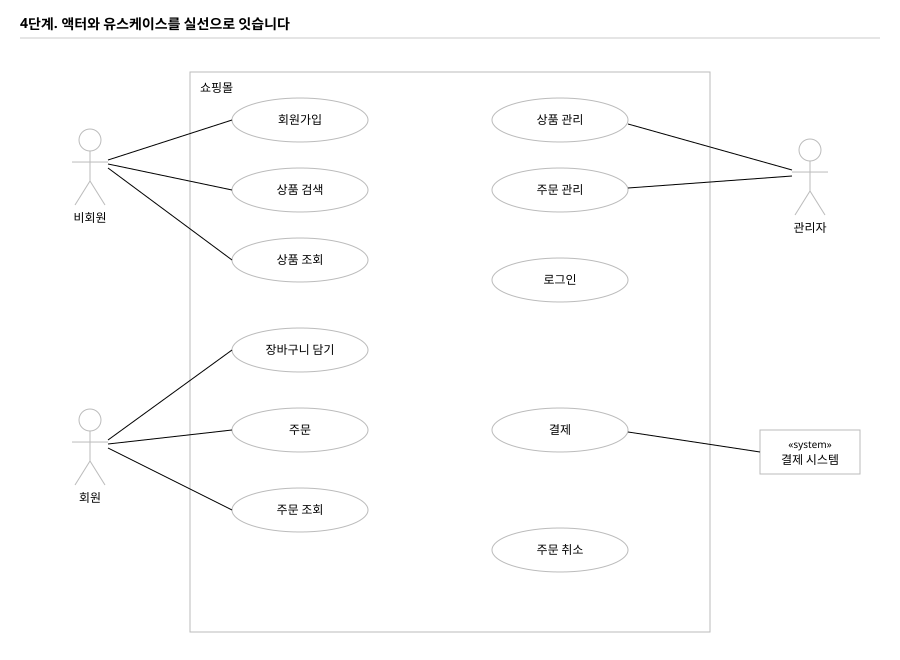
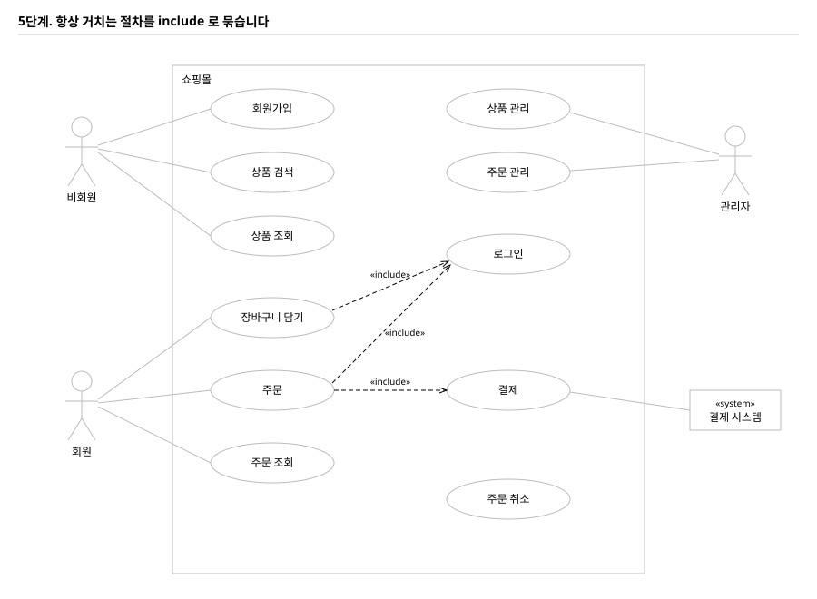
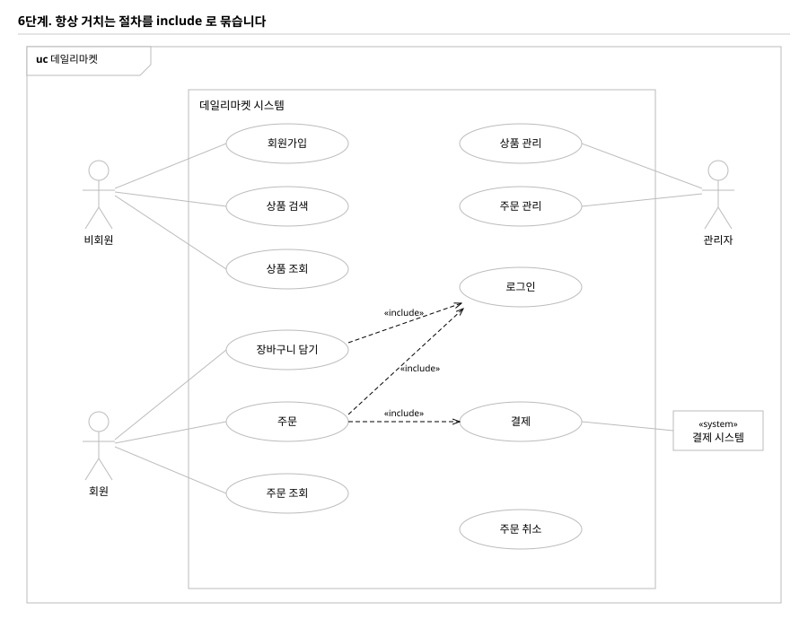
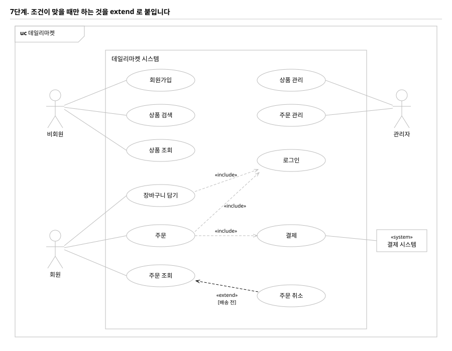

자주 틀리는 표기
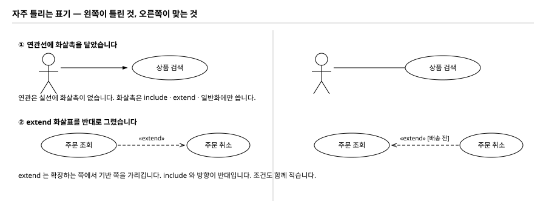
- include 되는 유스케이스에 액터 선을 또 그었습니다. 로그인은 다른 유스케이스가 부르는 공통 절차이므로 액터와 직접 잇지 않아도 됩니다
- 타원 안에 화면 이름을 썼습니다. 「상품 목록 화면」이 아니라 「상품을 조회한다」입니다
- 액터를 경계 안에 넣었습니다. 액터는 항상 경계 밖입니다
- extend 에 조건을 안 적었습니다. 조건이 없으면 extend 를 쓸 이유가 없습니다
- 프레임을 빠뜨렸습니다. 오각형 이름표가 있어야 UML 다이어그램의 꼴을 갖춥니다
- 앞에서 적은 SR 번호가 모두 타원으로 나타났습니까. 빠진 것이 있으면 그 요구사항은 설계에서 누락된 것입니다
- 연관선 중에 화살촉이 달린 것이 하나라도 있습니까
- extend 화살표가 확장 쪽에서 기반 쪽으로 갑니까. 조건을 대괄호로 적었습니까
- 타원 이름이 전부 동사로 끝납니까
- 액터가 전부 경계 밖에 있습니까
7유스케이스 명세서 — 2건 이상
이게 무엇인가
다이어그램의 타원 하나를 대사 수준으로 풀어 쓴 문서입니다. 다이어그램은 「무엇을 하는가」만 보여 주고, 명세서가 「어떤 순서로 주고받는가」를 말합니다.
이 문서가 다음 두 가지를 결정합니다.
- 화면의 개수 — 「시스템이 …한다」는 줄마다 화면이 하나씩 바뀝니다
- 화면이 처리해야 할 경우의 수 — 대안과 예외가 곧 화면의 분기입니다
다이어그램의 타원이 열 개여도 명세서는 중요한 두 개만 씁니다. 평가 요구가 2건 이상입니다. 가장 복잡한 것, 그리고 예외가 많은 것을 고릅니다.
서식 — 여덟 칸에 무엇을 넣는가
학습모듈은 개요 · 액터 · 이벤트 흐름 · 처리 내용 네 부분으로 쓰라고 합니다. 제출 서식은 이 넷을 실무에서 쓰는 여덟 칸으로 펼친 것입니다. 대응은 아래와 같습니다.
| 칸 | 학습모듈 | 무엇을 쓰는가 | 데일리마켓 예시 |
|---|---|---|---|
| 목표 | 개요 | 이 유스케이스가 무엇을 이루려는지 한 문장 | 고른 상품을 담아 두었다가 한 번에 주문하게 한다 |
| 유스케이스명 | 개요 | 다이어그램의 타원 이름과 똑같이. 번호를 붙이면 찾기 쉽습니다 | 장바구니 담기 (UC-06) |
| 액터 | 액터 | 누가 하는가. 외부 시스템이 관여하면 함께 적습니다 | 회원 |
| 사전 조건 | 이벤트 흐름 | 흐름이 시작되기 전에 이미 참인 것. 여기서 걸리면 아예 시작하지 못합니다 | 로그인 상태이고, 상세 화면에서 옵션을 고를 수 있다 |
| 기본흐름 | 이벤트 흐름 (기본 사항) |
다 잘 풀렸을 때의 순서. 한 줄에 한 동작, 번호를 붙입니다 | 1. 회원이 옵션과 수량을 고른다 … |
| 대안흐름 | 이벤트 흐름 (추가 사항) |
결과는 같은데 경로가 다른 경우 | 2a. 이미 담긴 상품이면 수량만 더한다 |
| 예외흐름 | 이벤트 흐름 (추가 사항) |
못 하게 막는 경우 | 3a. 비로그인이면 로그인 화면으로 보낸다 |
| 사후 처리 | 처리 내용 | 끝난 뒤 무엇이 남는가. 저장된 것, 바뀐 상태 | 장바구니에 1건이 추가되거나 수량이 늘어난다 |
학습모듈의 도서 대출 예시도 같은 구조입니다. 「사용자는 대출반납기기로 원하는 도서를 대출한다」가 개요이고, 화면 이름을 하나하나 적으며 사용자와 시스템이 번갈아 오가는 것이 이벤트 흐름입니다.
흐름 세 가지를 가르는 법
세 흐름의 차이가 이 단원의 전부입니다. 채점 항목 04 · 05 · 06번이 각각 하나씩 봅니다.
| 흐름 | 무엇인가 | 판단하는 말 | 채점 |
|---|---|---|---|
| 기본(정상) | 다 잘 풀렸을 때의 한 줄기 | 막히는 것도 갈라지는 것도 없이 끝까지 간 경우 | 04 |
| 대안 | 실패가 아니라 다른 길 | 「원래 하려던 일을 결국 해내는가?」 → 해낸다 | 05 |
| 예외 | 실패. 막고 알린다 | 「원래 하려던 일을 결국 해내는가?」 → 못 한다 | 06 |
이 한 가지 질문이면 갈립니다. 이미 담긴 상품이라 수량만 더해도 결국 장바구니에 담깁니다 — 대안입니다. 재고가 모자라면 담기지 않습니다 — 예외입니다.

번호 붙이는 규칙
갈라져 나온 단계 번호 뒤에 a · b · c 를 붙입니다.
3a 는 「3단계에서 갈라지는 첫 번째 경우」입니다.
- 같은 단계에서 여러 개가 갈라지면
3a3b3c로 이어 붙입니다 - 번호만 봐도 어디서 갈라지는지 보여야 합니다. 그래야 화면을 설계할 때 그 지점을 찾을 수 있습니다
123처럼 이어서 매기면 갈라지는 자리를 알 수 없어 감점됩니다
어떻게 쓰나 — 순서
- 정상 흐름부터 끝까지 씁니다. 대안과 예외는 아직 생각하지 않습니다
- 사람과 시스템을 번갈아 씁니다. 한쪽만 쓰면 화면 설계로 이어지지 않습니다
- 다 쓴 뒤 한 줄씩 되짚으며 「여기서 갈라질 수 있나?」를 물어봅니다
- 갈라지면 위 질문으로 대안인지 예외인지 가릅니다
- 사전 조건과 사후 처리를 채웁니다. 사전 조건은 1단계가 시작되기 전에 참인 것입니다
- 목표와 유스케이스명을 마지막에 다듬습니다
| 목표 | 회원이 고른 상품을 장바구니에 담아 두었다가 한 번에 주문할 수 있게 합니다. |
| 유스케이스명 | 장바구니 담기 (UC-06) |
| 액터 | 회원 |
| 사전 조건 | 로그인 상태이고, 상품 상세 화면에서 옵션과 수량을 고를 수 있다. |
| 기본흐름 |
1. 회원이 상품 상세 화면에서 옵션과 수량을 고릅니다. 2. 「장바구니 담기」를 누릅니다. 3. 시스템이 로그인 상태와 재고를 확인합니다. 4. 시스템이 장바구니에 상품을 담고 담기 완료 알림을 띄웁니다. 5. 회원은 계속 쇼핑하거나 장바구니로 이동합니다. |
| 대안흐름 |
2a. 이미 담긴 상품이면 새로 추가하지 않고 수량만 더합니다. 5a. 알림에서 「장바구니 보기」를 누르면 SC-04 장바구니로 이동합니다. |
| 예외흐름 |
3a. 비로그인이면 로그인 화면으로 보내고, 로그인 후 원래 화면으로 되돌립니다. 3b. 옵션을 고르지 않았으면 옵션 칸에 오류를 표시하고 담지 않습니다. 3c. 재고보다 많은 수량이면 「재고 24개」를 알리고 담지 않습니다. |
| 사후 처리 | 장바구니에 상품 1건이 추가되거나 기존 항목의 수량이 늘어납니다. |
예외 흐름 — 여기서 가장 많이 잃습니다
학습모듈이 직접 짚는 대목입니다. 개발자와 품질 관리자가 UI 시나리오 문서에 가장 많이 불만을 내는 부분이 예외 케이스 정리가 부실하다는 것입니다.
세 가지는 습관처럼 씁니다. 쇼핑몰이 아니어도 형태는 같습니다.
| 형태 | 쇼핑몰이라면 | 다른 서비스라면 |
|---|---|---|
| 권한이 없다 | 비로그인 상태로 담으려 함 | 예약 서비스에서 비로그인으로 예약, 도서관에서 대출 권한 없음 |
| 필수값이 없다 | 옵션을 고르지 않음 | 날짜를 안 고름, 필수 항목 미입력 |
| 자원이 모자라다 | 재고보다 많은 수량 | 좌석이 다 참, 대출 가능 권수 초과 |
외부 연동이 있으면 「응답이 오지 않으면」 을 반드시 씁니다. 결제처럼 밖에 요청을 보내는 흐름에서 이걸 빼면 같은 주문이 두 번 처리되는 설계가 됩니다. 실무에서도 자주 문제가 되는 부분입니다.
다음 단계로 어떻게 이어지는가
명세서를 다 쓰면 다음 두 가지가 거의 자동으로 나옵니다.
- 화면 목록 — 「시스템이 …을 보여 준다 / 띄운다」는 줄마다 화면이 하나입니다. 위 예시에서 상세 화면 · 알림 · 장바구니 화면이 나옵니다
- 화면 흐름도의 화살표 — 3a 의 「로그인 화면으로 보내고 되돌린다」가 그대로 흐름도의 점선 분기가 됩니다
그래서 명세서를 대충 쓰면 뒤의 두 산출물이 근거를 잃습니다. 반대로 여기를 꼼꼼히 쓰면 뒤가 빨라집니다.
- 기본흐름에 「사용자가 …한다」와 「시스템이 …한다」가 번갈아 나옵니까. 한쪽만 있으면 04번을 잃습니다
- 대안흐름이 실패가 아닌 것들입니까. 실패를 대안에 넣으면 05번과 06번이 같이 흔들립니다
- 예외흐름에 권한 · 필수값 · 자원 세 형태가 다 있습니까
- 대안과 예외의 번호가 갈라지는 단계 번호를 달고 있습니까
- 사전 조건이 1단계 전에 이미 참인 것입니까. 흐름 중간의 조건을 적지 않았습니까
- 사후 처리에 남는 것이 적혀 있습니까
- 두 건 이상 썼습니까
8스타일가이드
이게 무엇인가
화면을 그리기 전에 색·글자·간격·부품을 미리 정해 문서로 고정한 것입니다. 정해 두지 않으면 화면마다 가격 색이 달라지고, 버튼 높이가 제각각이 됩니다.
학습모듈의 스토리보드 2단계 「스타일 확정」이 이것입니다. 1단계가 메뉴 구성도, 3단계가 설계하기입니다. 과제 순서와 그대로 맞습니다.
어떤 순서로 쓰나
- 토큰을 정합니다 — 색 · 글자 크기 · 간격. 값 자체를 먼저 정합니다
- 부품을 만듭니다 — 그 값으로 버튼 · 입력칸 · 아이콘을 만듭니다
- 조립해 보입니다 — 헤더와 카드를 실제로 만들어 보여 줍니다. 이게 과제 3과 대조할 기준입니다
평가도구가 요구하는 6항목은 구동환경 · 로고 · 폰트 · 색상 · 레이아웃 · 구성요소입니다. 위 순서로 쓰면 6항목이 자연히 다 들어갑니다.
지킬 것
- 수치로 적습니다. 「파란색」이 아니라
#2b4c7e, 「적당한 여백」이 아니라24px. 과제 3에서 「일관성 있게 적용됐는가」를 판정하려면 대조할 숫자가 있어야 합니다 - 색은 역할로 묶습니다. 주조 60 · 보조 30 · 강조 10. 강조색은 가격과 구매 버튼에만 쓴다고 못 박아야 화면마다 가격 색이 달라지지 않습니다
- 레이아웃만 10점입니다. 다른 항목의 두 배입니다. 칼럼 · 거터 · 마진과 화면 폭별 상품 열 수까지 적습니다
- 버튼은 상태까지 — 기본 · hover · 비활성. 상태가 없으면 과제 3에서 효과를 만들 근거가 없습니다
- 색 칩 · 버튼 · 글자 견본은 실제 크기로 그려 넣습니다. 글로만 쓰면 대조할 수 없습니다
완성된 예시 지면을 원본으로 열어 볼 수 있습니다.
스타일가이드 지면 07 08 09 10 119화면 목록 · 흐름도 · 메뉴 구조도
이게 무엇인가
지금까지는 「무엇을」이었고, 여기부터 「어디서」입니다. 유스케이스의 각 단계가 어느 화면에서 일어나는지 배치하는 일입니다.
화면마다 고유 ID 를 붙입니다. 학습모듈이 화면 설계의 첫 항목으로 드는 것이 이것입니다. SC-01 처럼 붙여 두면 흐름도 · 프로토타입 · 채점표가 모두 같은 이름으로 연결됩니다.
어떻게 만드나
- 화면을 뽑습니다. 유스케이스 명세의 「시스템이 …한다」 줄마다 화면이 하나씩 필요합니다
- 내부와 외부를 구분합니다. 우리가 직접 그리면 내부, 다른 시스템 화면을 부르면 외부입니다. 결제창이 대표적인 외부입니다
- 흐름도를 그립니다. 화면을 상자로, 이동을 화살표로. 화살표에는 무엇 때문에 이동하는지를 적습니다. 이동 조건이 곧 폼 흐름입니다
- 제약사항을 선으로 그립니다. 글로 쓰지 않습니다
- 메뉴 구조도를 그립니다. 계층으로 그리고 깊이를 그렇게 정한 이유를 함께 씁니다
흐름으로 그립니다 — 상품 상세에서 「담기」를 누름 → (비로그인이면) 점선으로 로그인 화면 → 로그인 후 원래 화면으로 복귀.
수행준거 4의 문구가 「제약사항을 화면과 폼 흐름설계에 반영할 수 있다」 입니다. 반영은 그렸다는 뜻입니다.
클릭이 한 번 늘 때마다 이탈이 커집니다. 메뉴 깊이의 근거를 쓰면 18번의 「직관적」이 설명됩니다.
화면 목록 · 화면 흐름도 · 메뉴 구조도 17 18 1910프로토타입 — 3화면 이상
이게 무엇인가
실제로 눌리는 화면입니다. 그림이 아니라 이동이 동작해야 합니다. 작업지시서에 「Interactive 한 화면이 구현되었는지 테스트 확인」이라고 적혀 있습니다.
학습모듈은 종이 프로토타입과 디지털 프로토타입을 구분합니다. 기간이 짧고 협의가 빠르면 종이, 재사용이 필요하고 산출물에 가까운 결과가 필요하면 디지털입니다. 이 평가는 디지털이라 Figma 를 씁니다.
어떻게 만드나
- 프레임 이름을 화면코드로 붙입니다. 화면 목록 · 흐름도와 그대로 대응합니다
- 스타일가이드 값을 그대로 씁니다. 여기서 새로 만들면 12 · 13 · 16번을 잃습니다
- 프레임끼리 연결합니다. 흐름도의 화살표를 그대로 옮깁니다
- GNB 메뉴 효과 1개와 그 밖의 효과 1개 이상을 만듭니다
- 캡처 세 장을 냅니다 — 캔버스 전체(연결선이 보이게) · 대표 화면 확대 · Prototype 패널
정적인 그림 여러 장은 17번을 만족하지 못합니다. 프레임 사이의 파란 연결선이 직접 증거입니다.
일관성은 「지켰다」가 아니라 「어디에 무엇을 썼다」 로 써야 인정됩니다.
Figma 파일 · 캡처 3장 12 13 14 15 16 1711자가 점검 19항목
포트폴리오 제출서 각 과제 끝에 자가 점검이 있습니다. 강사가 채점하는 항목과 문구까지 같습니다. 하나씩 켜 보고 안 켜지는 것을 채웁니다.
여기서 다 켜지면 60점은 넘습니다. 합격선이 60점입니다.
12한 파일로 합칩니다
유스케이스 → 스타일가이드 → 프로토타입 캡처 순서로 합쳐 PDF 로 만듭니다. 파일명에 조 번호를 넣습니다.
- 프로토타입 캡처를 파일 안에 반드시 넣습니다. 링크만 내면 권한이 바뀌었을 때 평가 근거가 사라집니다
- Figma 공유 권한을 링크가 있는 모든 사용자 보기 가능 으로 바꿉니다
- 팀원 전원의 이름과 역할을 첫 장에 적습니다
13포털에 냅니다
제출 칸은 파일 1개와 링크 1개뿐입니다. 팀원 전원이 같은 파일을 각자 올립니다. 포털이 개인별로 점수를 매기기 때문입니다.
3. 자주 잃는 점수
| 항목 | 이런 경우 | 잃는 점수 |
|---|---|---|
| 06 | 명세서에 정상 흐름만 쓰고 예외 흐름을 안 썼습니다 — 가장 흔합니다 | 5 |
| 02 03 | 관계선을 섞어 그렸습니다. 연관에 화살촉을 달거나 extend 방향을 반대로 | 10 |
| 10 | 레이아웃을 「반응형으로 한다」 한 줄로 끝냈습니다. 칼럼과 열 수가 없습니다 | 10 |
| 16 | 스타일가이드의 색과 프로토타입의 색이 다릅니다. 대조하면 바로 보입니다 | 5 |
| 17 | 화면을 그림으로만 냈습니다. 프레임 사이 연결이 없습니다 | 5 |
| 14 15 | 효과를 한 줄로 뭉뚱그렸습니다. 두 개가 각각 보여야 합니다 | 10 |
이 평가는 아는 것을 묻지 않고 만든 것을 봅니다. 개념은 산출물을 만들 때 판단 기준으로만 쓰고, 시간은 레벨 2와 3에 씁니다. 막히면 예시를 여는 것이 가장 빠릅니다.